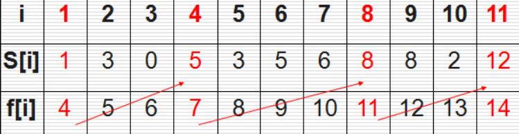
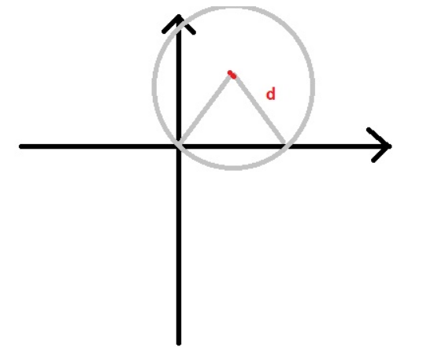

贪心算法
定义：
贪心算法指的是，在对问题求解时，总是做出在当前看来是最好的选择，也就是说，不从整体最优上加以考虑，它所做出的仅是在某种意义上的局部最优解，贪心算法不是对所有问题都能的得到整体最优解，但对范围相对广泛的许多问题它能产生整体最优解或者是整体最优解的近似解。
贪心算法不是对所有问题都能得到整体最优解，关键是贪心策略的选择，选择的贪心策略必须具备无后效性，即某个状态以前的过程不会影响以后的状态，只与当前状态有关。
适用于贪心算法求解的最优化问题：
- 最优子结构：问题的最优解包含了子问题的最优解
- 贪心选择性质：可通过做局部最优（贪心）选择来达到全局最优解（可行性）。
解题的一般步骤是：
- 建立数学模型来描述问题；
- 把求解的问题分成若干个子问题；
- 对每一子问题求解，得到子问题的局部最优解；
- 把子问题的局部最优解合成原来问题的一个解。
如果大家比较了解动态规划，就会发现它们之间的相似之处。最优解问题大部分都可以拆分成一个个的子问题，把解空间的遍历视作对子问题树的遍历，则以某种形式对树整个的遍历一遍就可以求出最优解，大部分情况下这是不可行的。贪心算法和动态规划本质上是对子问题树的一种修剪，两种算法要求问题都具有的一个性质就是子问题最优性(组成最优解的每一个子问题的解，对于这个子问题本身肯定也是最优的)。动态规划方法代表了这一类问题的一般解法，我们自底向上构造子问题的解，对每一个子树的根，求出下面每一个叶子的值，并且以其中的最优值作为自身的值，其它的值舍弃。而贪心算法是动态规划方法的一个特例，可以证明每一个子树的根的值不取决于下面叶子的值，而只取决于当前问题的状况。换句话说，不需要知道一个节点所有子树的情况，就可以求出这个节点的值。由于贪心算法的这个特性，它对解空间树的遍历不需要自底向上，而只需要自根开始，选择最优的路，一直走到底就可以了。
例子：
活动选择问题
有n个需要在同一天使用同一个教室的活动a1,a2,…,an，教室同一时刻只能由一个活动使用。每个活动ai都有一个开始时间si和结束时间fi 。一旦被选择后，活动ai就占据半开时间区间[si,fi)。如果[si,fi]和[sj,fj]互不重叠，ai和aj两个活动就可以被安排在这一天。该问题就是要安排这些活动使得尽量多的活动能不冲突的举行。
例如下图所示的活动集合S，其中各项活动按照结束时间单调递增排序。

可以用数学归纳法证明，我们的贪心策略应该是每次选取结束时间最早的活动。直观上也很好理解，按这种方法选择相容活动为未安排活动留下尽可能多的时间。这也是把各项活动按照结束时间单调递增排序的原因。
1 |
|
钱币找零问题
这个问题在我们的日常生活中就更加普遍了。假设1元、2元、5元、10元、20元、50元、100元的纸币分别有c0, c1, c2, c3, c4, c5, c6张。现在要用这些钱来支付K元，至少要用多少张纸币？用贪心算法的思想，很显然，每一步尽可能用面值大的纸币即可。在日常生活中我们自然而然也是这么做的。在程序中已经事先将Value按照从小到大的顺序排好。
1 |
|
再论背包问题
很容易证明，背包问题不能使用贪心算法。然而我们考虑这样一种背包问题：在选择物品i装入背包时，可以选择物品的一部分，而不一定要全部装入背包。这时便可以使用贪心算法求解了。计算每种物品的单位重量价值作为贪心选择的依据指标，选择单位重量价值最高的物品，将尽可能多的该物品装入背包，依此策略一直地进行下去，直到背包装满为止。在零一背包问题中贪心选择之所以不能得到最优解原因是贪心选择无法保证最终能将背包装满，部分闲置的背包空间使每公斤背包空间的价值降低了。在程序中已经事先将单位重量价值按照从大到小的顺序排好。
1 |
|
多机调度问题
n个作业组成的作业集，可由m台相同机器加工处理。要求给出一种作业调度方案，使所给的n个作业在尽可能短的时间内由m台机器加工处理完成。作业不能拆分成更小的子作业；每个作业均可在任何一台机器上加工处理。这个问题是NP完全问题，还没有有效的解法(求最优解)，但是可以用贪心选择策略设计出较好的近似算法(求次优解)。当n<=m时，只要将作业时间区间分配给作业即可；当n>m时，首先将n个作业从大到小排序，然后依此顺序将作业分配给空闲的处理机。也就是说从剩下的作业中，选择需要处理时间最长的，然后依次选择处理时间次长的，直到所有的作业全部处理完毕，或者机器不能再处理其他作业为止。如果我们每次是将需要处理时间最短的作业分配给空闲的机器，那么可能就会出现其它所有作业都处理完了只剩所需时间最长的作业在处理的情况，这样势必效率较低。在下面的代码中没有讨论n和m的大小关系，把这两种情况合二为一了。
1 |
|
小船过河问题
题目大意是只有一艘船，能乘2人，船的运行速度为2人中较慢一人的速度，过去后还需一个人把船划回来，问把n个人运到对岸，最少需要多久。先将所有人过河所需的时间按照升序排序，我们考虑把单独过河所需要时间最多的两个旅行者送到对岸去，有两种方式：
1.最快的和次快的过河，然后最快的将船划回来；次慢的和最慢的过河，然后次快的将船划回来，所需时间为：t[0]+2*t[1]+t[n-1]；
2.最快的和最慢的过河，然后最快的将船划回来，最快的和次慢的过河，然后最快的将船划回来，所需时间为：2*t[0]+t[n-2]+t[n-1]。
算一下就知道，除此之外的其它情况用的时间一定更多。每次都运送耗时最长的两人而不影响其它人，问题具有贪心子结构的性质。
1 |
|
区间覆盖问题
题目大意是假设海岸线是一条无限延伸的直线。陆地在海岸线的一侧，而海洋在另一侧。每一个小的岛屿是海洋上的一个点。雷达坐落于海岸线上，只能覆盖d距离，所以如果小岛能够被覆盖到的话，它们之间的距离最多为d。题目要求计算出能够覆盖给出的所有岛屿的最少雷达数目。

对于每个小岛，我们可以计算出一个雷达所在位置的区间。
问题转化为如何用尽可能少的点覆盖这些区间。先将所有区间按照左端点大小排序，初始时需要一个点。如果两个区间相交而不重合，我们什么都不需要做；如果一个区间完全包含于另外一个区间，我们需要更新区间的右端点；如果两个区间不相交，我们需要增加点并更新右端点。
1 |
|